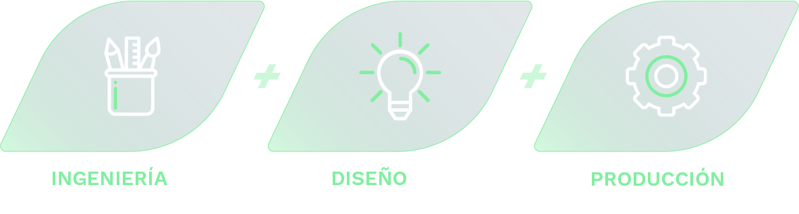
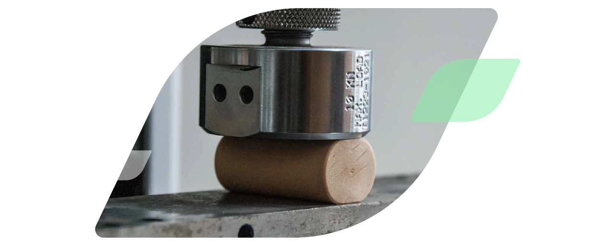

Plásticos sustentables
Proceso de producción
Producimos con estándares normalizados internacionales. Contamos con certificaciones tales como ISO 9001-2000, ISO 22000 y FSSC (Food safety system control). Nuestra planta está dotada de maquinaria de última generación, de bajo consumo energético y amigables con el medio ambiente por su baja generación de residuos.

Tecnología
Precisión & calidad
Buscamos respuestas creativas para proyectos propios o de
terceros.
Desde el nacimiento de las idea hasta el producto final.
Áreas de trabajo
Amplia experiencia
Contamos con trabajos realizados para distintas áreas de la industria.
Fabricamos desde pequeñas piezas y componentes hasta líneas
completas de productos para consumo hogareña.